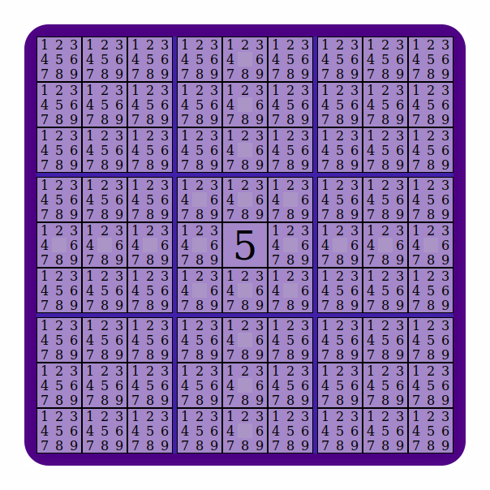
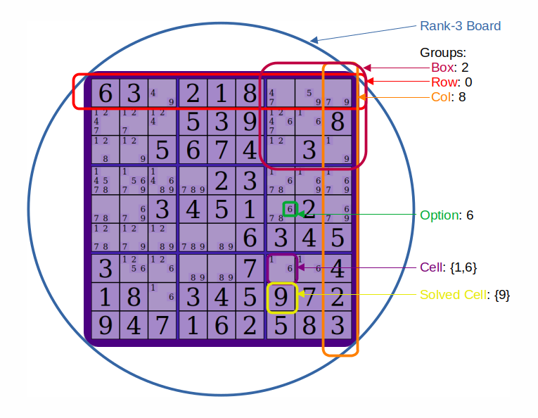
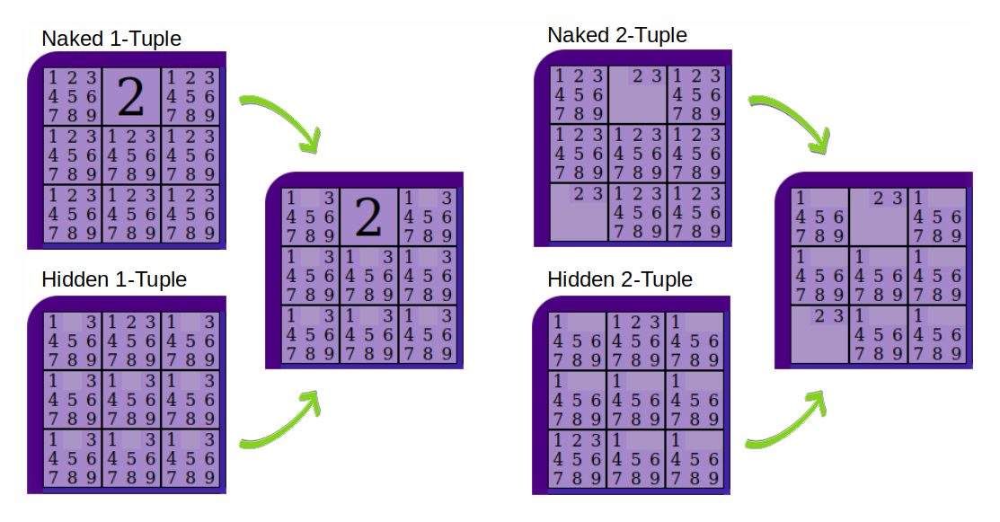
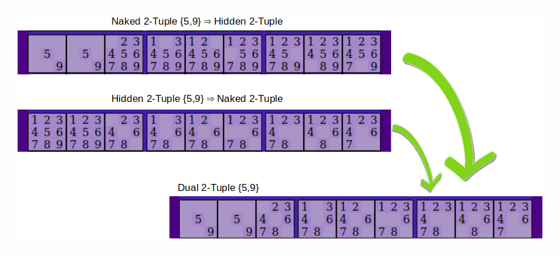
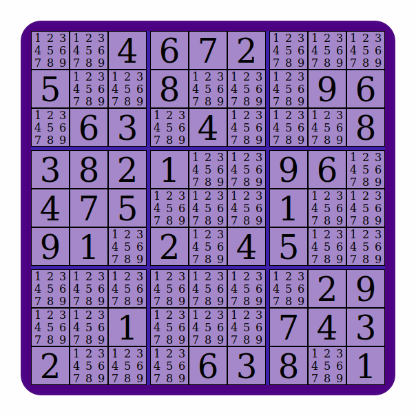
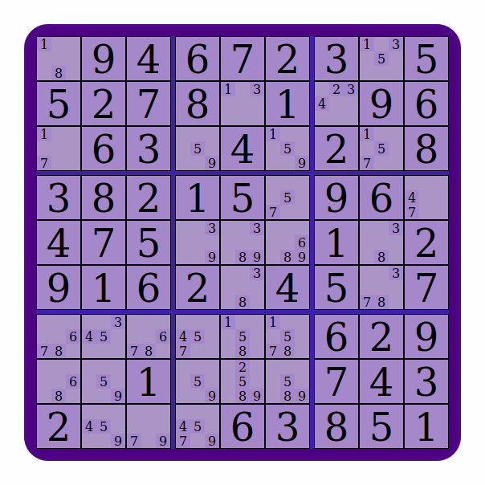

N-Tuple Sudoku Constraints Algorithm
Mark April 24, 2023 [Algorithm] #PureScriptSudoku notations
This blog entry assumes the reader understands the rules of Sudoku.
When filling in a Sudoku, you may think of each cell on the board as being either filled in or empty. As puzzles becomes more advanced, it's common for people to add notations or take notes in some way. The notations used here describe each cell in a board as all the remaining possibilities for that cell.
Consider the following board where only a 5 in the middle is given. You can then notice that the cell's row, column, and box have all had all the 5s removed. The rest of the cells can all still have any possibility.
Because this is not a proper Sudoku, we've annotated everything that we can logically deduce and yet we haven't solved the puzzle. For a proper Sudoku, you can keep deducing reasons for removing possibilities from cells until each cell has only a single possibility left. Once this is done, the puzzle is solved.
This blog aims to explain an algorithm for removing possibilities from a Sudoku Puzzle. The technique will not solve every proper Sudoku, but it will fully solve most of the puzzles you might find in a sudoku book and can be easily combined with a brute force algorithm to solve the rest. If you look up Sudoku solving techniques online, this algorithm is a generalization of the naked and hidden pairs technique, but generalized for tuples of any size.
We'll discuss the technique, then explore some ways to efficiently implement the technique via bit-masking.
Vocabulary
Talking about Sudoku requires some vocabulary for which we'd better be on the same page (pun intended).
We'll go through some of that here.
- Board: A 9x9 (rank-3) Sudoku board is a collection of 81 cells where each cell belongs to exactly 1 row, 1 column, and 1 box.
- Rank: A Sudoku of rank n is an n2×n2 square grid, subdivided into n2 boxes (each of size n×n). There are n2 options used to fill out the board.
- Option: can be represented by any symbols, though typically options are the numbers used to fill a Sudoku board. On a 9x9 board, they are elements of the set
{1,2,3,4,5,6,7,8,9} - Index: The name for a position on the board. On a 9x9 board, the set of indices are
{0..80} - Cell: An index and a set of options. The set of options for a given cell is an encoding of all the possible options that a position on a board may eventually take. If a cell contains the set
{1,4,6,7,8}, that means there are constraints on the board such that any of the other options are invalid. A cell is both a position on a board and a set of options. For a 9x9 board, the cardinality (number of possible options) of a cell is between 1 and 9 (no empty set). - Forced/Solved Cell: A cell whose set of options has a cardinality of 1.
- Group: Predefined collection of cells (row, column, or box)
- Row/Col/Box: Names for the 3 groups of a typical Sudoku board
- Peers: cells (specifically indices) that share a group
Here is an image highlighting some of these terms:
The One Rule
You have solved a Sudoku puzzle if and only if you
Fill in the whole board using the set of options such that each group contains each option exactly once.
Overview
To keep the language and examples from becoming overly verbose, I'm going to assume a rank-3 (9x9) Sudoku board throughout this explanation. There's nothing special about 9x9 Sudoku when it comes to n-tuple constraints and this approach works just as well with any rank Sudoku.
One of the basic approaches to solving a Sudoku puzzle is to search each group (Row, Column, or Box) without regard for the state of the rest of the board. The aim is to split a group into two distinct subgroups such that the two subgroups can safely have no options in common.
There are two approaches that allow you to mechanically find such subgroups. We’ll call these the Naked constraint and the Hidden constraint.
- If we discover these subgroups using the Naked constraint, we'll call the subgroup discovered a Naked Tuple. The other subgroup is implicitly just the rest of the group.
- If we discover these subgroups using the Hidden constraint, we'll call the subgroup discovered a Hidden Tuple. The other subgroup is, again, implicitly the rest of the group.
I define Naked constraint and Hidden constraint below (In How do Tuples constrain a board?), but it's enlightening to first build some intuition of Naked and Hidden Tuples. Seeing how to find each tuple and understanding that the two are actually duals of one another, further simplifies the definition of these constraints.
N-Tuple examples
Here's an imagine that show how either a naked tuple or a hidden tuple can be used to arrive at a new board state. There's an example for singletons and for pairs.
What follows is the same examples described via language:
Naked N-Tuple described examples
- Naked 1-Tuple: (Singleton) There is a cell in this group that has only 1 option (the option 2). Therefore, all other cells in this group cannot contain a 2
- Naked 2-Tuple: (Pair) There are 2 cells that have only some of 2 options (2s or 3s). Therefore, all other cells in this group cannot contain a 2 or a 3.
- Naked N-Tuple: There are N cells that have only some of N options. Therefore, all other cells in this group cannot contain any of these N options
Hidden N-Tuple described examples
- Hidden 1-Tuple: (Singleton) There is only 1 cell in this group that may contain a 2, therefore this cell can contain a only 2 (and no other options)
- Hidden 2-Tuple: (Pair) There are only 2 cells in this group that contain either a 2 or a 3, therefore these two cells can contain only 2 or 3
- Hidden N-Tuple: There are only N cells that contain any of these N options, therefore these N cells can contain only these N options
How to find a Tuple
This dual nature of naked and hidden pairs is at the heart of what this algorithm does. In general, we find a tuple, update the annotations on the board, then repeat.
Is it hard to find such tuples?
Humans are pretty quick to spot singletons and pairs, though it can be difficult to see larger tuples. The process of finding a tuple can be seen as set operations on fairly small sets, and fairly small sets can be presented as binary numbers. Computers can perform these checks extremely efficiently. More impressive is that the time it takes to find a singleton is the same as the time it takes to discover any of the larger tuples (Though we'll see why we prefer smaller tuples regardless when we discuss optimizations)
There are a few set-operations you need to understand before you can start finding tuples.
-
Cardinality: A measure of the number of elements of the set. For example, if α is
{1,2,4,6,7,9}, then the cardinality of α is six —|α| == 6. The cardinality of the empty set is zero —|{}| == 0. -
Superset: A set of options α is a superset of another set β if every option in β is also an option in α. So the set
{1,2,3,4,5,6,7,8,9}is a superset of every other possible set of options. The set{8}is only a superset of{8}and{}(the empty set). Since cells cannot have a cardinality of zero, that means{8}is only a superset of cells that are solved with the option 8.- Use this to find naked tuples
-
Not Disjoint: If the intersection of two sets is inhabited, then they are not disjoint. The intersection of two sets is just the set of elements they have in common.
{5,6,7,8,9}and{1,3,5,7,9}are not disjoint because they have this intersection:{5,7,9}.{1,2,3}and{4,5,6}are disjoint because their intersection is empty{}.- Use this to find hidden tuples
How to find a Naked N-Tuple.
You might find a naked tuple if you:
- Pick any set of options (They have some cardinality of size n)
- Pick any group on the board.
- If the set you picked is a superset of exactly n cells in that group, then those n cells form a Naked N-Tuple.
You will find every naked tuple if you do this for:
- Every combination of options that form a set (of which there are 511)
- Every group (of which there are 27)
How to find a Hidden N-Tuple
You might find a hidden tuple if you:
- Pick any set of options (They have some cardinality of size n)
- Pick any group on the board.
- If the set you picked is not disjoint with exactly n cells in that group, then those n cells form a Naked N-Tuple in that group.
You will find every hidden tuple if you do this for:
- Every combination of options that form a set (of which there are 511)
- Every group (of which there are 27)
What do Naked and Hidden N-Tuples have in common?
When describing how to find a Hidden or Naked Tuple, the process is nearly identical. Intuitively you can use the same algorithm to find both. Moreover, if you look for both at the same time, you don't have to repeat steps 1 and 2 from above.
There is a much stronger relationship between these two constraints. For any value of N, every Naked N Tuple has a corresponding Hidden (9-N) Tuple and vice versa.
For example: the following []s contain a group. Each cell is just an index paired with a set of options (These indices happen to be from a box in the board.)
[ (0 { 1,2,3,4,5,6,7,8,9 })
, (1 { 2,3,4,5,6,7,8,9 })
, (2 { 2,3,4,5,6,7,8,9 })
, (9 { 2,3,4,5,6,7,8,9 })
, (10 { 2,3,4,5,6,7,8,9 })
, (11 { 2,3,4,5,6,7,8,9 })
, (18 { 2,3,4,5,6,7,8,9 })
, (19 { 2,3,4,5,6,7,8,9 })
, (20 { 2,3,4,5,6,7,8,9 })
]
- The set {1} with cardinality 1 is not disjoint with exactly 1 cell in this group (The cell with index 0).
- Therefore: this cell is a hidden 1-tuple in this group.
If that's so, what is the corresponding naked 8-tuple? Well:
- The set {2,3,4,5,6,7,8,9} with cardinality 8 is a superset of exactly 8 cells in this group (The cells with indices 1,2,9,10,11,18,19,20).
- Therefore: these cells are a Naked 8-Tuple in this group.
(A moment's reflection with show that...) This pattern holds for every Hidden and Naked Tuple. Hidden Tuples are the dual of naked Tuples.
If every Naked Tuple has a corresponding Hidden Tuple and vice versa, do we need both?
Strictly speaking, no. They represent the same constraints on the board.
But: when designing an algorithm smaller tuples are better. This is for a few reasons.
- If you look for small tuples first, you can narrow the search space while looking for larger tuples. For example: if the cells (2 {3,4}) & (8 {3,4}) are a 2-Tuple, then no other n-tuples of size 2, 3, 4, etc in the same group need to search the indices 2 or 8 nor the options 3 or 4. This doesn't work in reverse. Consider if cells (2 {3}) & (8 {3,4}) are a 2-Tuple, we still want to find the naked 1-tuple (2 {3}) since it would represent a constraint that removes the 3 from (8 {3,4}).
- Tuples can exist in more than one group at a time. If we find a 1-tuple in the first row, this is guaranteed to also be a 1-tuple in a column and a box (Every index has exactly 1 row, 1 column, and 1 box). In a 9x9 board, n-tuples of size 1 always have 3 groups, while n-tuples of size 2 and 3 may have up to 2 groups. Smaller tuples are better because they can be constraints for and narrow the search space in multiple groups at once.
- If you look for both Hidden and Naked tuples at once, you can stop looking after you've searched for n-tuples of size 4. Hidden Tuples of sizes 1 to 4 correspond to Naked Tuples of sizes 9 to 5 and vice versa (Naked Tuples of sizes 1 to 4 correspond to Hidden Tuples of sizes 9 to 5)
How Tuples Constrain a Board
An N-Tuple is a set of options with cardinality n, paired with a list of indices of length n.
Each N-Tuple constrains the board in 2 ways:
- Naked Constraint: Constrain the cells at each index to be a subset of the set of options.
- Hidden Constraint: Constrain the peers of this n-Tuple to be disjoint with the set of options.
In either case, you remove the minimal number of elements possible such that this constraint is met.
The peers of an n-tuple:
- The peers of a cell are all the other cells that share a group with it. Remember that each cell is part of three groups.
- The peers of a list of cells are the cells that share a group with with every cell in the list. A tuple must share at least 1 group. The cells with index 0 and 12 have no peers can therefore never be a valid 2-tuple.
Notice the symmetry here:
- We find a Naked Tuple by discovering that the first constraint is satisfied and therefore can enforce the second constraint on the board.
- We find a Hidden Tuple by discovering that the second constraint is satisfied and therefore can enforce the first constraint n the board.
So while each tuple can enforce both constraints, only one of the constraints will ever change the cells on the board. One of the two constraints will already have been met.
Representing Data
Representing a Cell
A fast a simple way to encode the set of options for a cell is as an integer bit-field. In the binary representation, each digit represents a true/false value for the question (is n an element of this cell's set).
000000000 is the empty set {}
000000001 is the set {1}
000000010 is the set {2}
000000100 is the set {3}
000000111 is the set {1,2,3}
101010101 is the set {1,3,5,7,9}
111111111 is the set {1,2,3,4,5,6,7,8,9}
Representing a board
A board can be represented by the unconstrained options for each cell. In this way, a starting board constrains each clue as the only option for the given cell and leaves all other options unconstrained.
These representations all describe the same starting board:
- Integer base10
[ 511,511,8, 32, 64, 2, 511,511,511
, 16, 511,511,128,511,511,511,256,32
, 511,32, 4, 511,8, 511,511,511,128
, 4, 128,2, 1, 511,511,256,32, 511
, 8, 64, 16, 511,511,511,1, 511,511
, 256,1, 511,2, 511,8, 16, 511,511
, 511,511,511,511,511,511,511,2, 256
, 511,511,1, 511,511,511,64, 8, 4
, 2, 511,511,511,32, 4, 128,511,1
]
- Integer base2:
[ 111111111,111111111,000001000,000100000,001000000,000000010,111111111,111111111,111111111
, 000010000,111111111,111111111,010000000,111111111,111111111,111111111,100000000,000100000
, 111111111,000100000,000000100,111111111,000001000,111111111,111111111,111111111,010000000
, 000000100,010000000,000000010,000000001,111111111,111111111,100000000,000100000,111111111
, 000001000,001000000,000010000,111111111,111111111,111111111,000000001,111111111,111111111
, 100000000,000000001,111111111,000000010,111111111,000001000,000010000,111111111,111111111
, 111111111,111111111,111111111,111111111,111111111,111111111,111111111,000000010,100000000
, 111111111,111111111,000000001,111111111,111111111,111111111,001000000,000001000,000000100
, 000000010,111111111,111111111,111111111,000100000,000000100,010000000,111111111,000000001
]
- As sets of options, converted to strings:
[ "123456789","123456789","4", "6", "7", "2", "123456789","123456789","123456789"
, "5", "123456789","123456789","8", "123456789","123456789","123456789","9", "6"
, "123456789","6", "3", "123456789","4", "123456789","123456789","123456789","8"
, "3", "8", "2", "1", "123456789","123456789","9", "6", "123456789"
, "4", "7", "5", "123456789","123456789","123456789","1", "123456789","123456789"
, "9", "1", "123456789","2", "123456789","4", "5", "123456789","123456789"
, "123456789","123456789","123456789","123456789","123456789","123456789","123456789","2", "9"
, "123456789","123456789","1", "123456789","123456789","123456789","7", "4", "3"
, "2", "123456789","123456789","123456789","6", "3", "8", "123456789","1"
]
The starting board above has 38 easy to spot naked 1 Tuples.
If we consider cells with the set of options {4}, then
- cell
board[2]is a Naked 1 Tuple in Row 0, Column 2, and Box 0. - cell
board[22]is a naked 1 Tuple in Row 2, Column 4, and Box 1. - 3 more 1-Tuples follow this pattern with "4"
If we consider cells with the set of options {4,6}, then
- cells
board[2]&board[3]are a Naked 2 Tuple in Row 0 - cells
board[2]&board[19]are a Naked 2 Tuple in Box 0 - cells
board[22]&board[76]are a Naked 2 Tuple in Column 3
Lets apply the Naked 1-Tuple constraints to this starting board:
This would be the output of one iteration of the Naked 1 Tuple algorithm. Aside: This iteration has revealed some Naked 1 Tuples which where not present before, so the Naked 1 Tuple algorithm could be run for another iteration. This project encodes this sort of information using the Stateful abstract data type in Stateful.purs.
Row 4 now has an interesting application of Naked 3-Tuples.
Consider cells with only the set of options {3,8,9}:
board[39]={3,9}.board[40]={3,8,9}&board[43]={3,8}- Every other cell in Row 4 has at least 1 option that isn't a 3, 8 or 9
- Therefore, no other cells in Row 4 may contain a 3, 8 or 9
- Therefore,
board[41]which currently has{6,8,9}, can be further constrained to{6}
Remember that every Naked N-Tuple there has a corresponding Hidden 9-N Tuple.
Row 4 has the same application of a Hidden 6-Tuple.
Consider cells with the set of options {1,2,4,5,6,7}
board[n]where n = 36,37,38,41,42,44 are the only cells in Row 4 that have at least one of any of the options 1,2,4,5,6, or 7- Therefore, these 6 cells in Row must contain only 1,2,4,5,6, or 7 (and no other options)
- Therefore,
board[41]which currently has{6,8,9}, can be further constrained to{6}
Groups
This is how a group might look for the 0th box in a Sudoku with board-size 9.
This is just made up and not based on the board shown above.
unit = select [0,1,2,9,10,11,18,19,20] sudokuBoard ==
[ 000000001 -- unit[0] == sudokuBoard[0] is a cell that has only 1 of 9 possible symbols as an option
, 101010101 -- unit[1] == sudokuBoard[1] is a cell that has 5 of 9 possible symbols as an option
, 000100010 -- unit[2] == sudokuBoard[2]
, 000111000 -- unit[3] == sudokuBoard[9]
, 010000000
, 000110000
, 000110000
, 000110000
, 000110000 -- unit[8] == sudokuBoard[20]
]
A detour into purescript.
If we consider the unconstrained options in a cell as a set of options, then we can use bitwise operations to describe two important relationships between cells.
isSuperset helps us find Naked N-Tuples
- Does cell
acontain at least every option found in cellb?
Not Disjoint helps us find Hidden N-Tuples
- Do two cells share any options in common?
- Is the union of two cells inhabited?
OR is the bitwise OR operation.
AND is the bitwise AND operation.
This is how this might be written in Purescript
type Cell = Int
isSuperset a b = a OR b == a
notDisjoint a b = a AND b /= 0
Algorithm
Hidden N Tuples & Naked N Tuples Algorithm
This algorithm works over groups (Rows, Columns, and Boxes), what's described here can be done for each group in turn.
The general flow is to generate actions for every group, and then apply those actions to update the board state. That's one iteration of the algorithm. If you've generated any actions that have updated the board state, then you can run a second iteration of this algorithm on the new board. Aside: In this project, hiddenTuples and nakedTuples are strategies that each describe one iteration and untilStable can re-run any strategy until it doesn't update the board anymore.
The algorithm iterates through possible cells (for board-size of 9, this is integers between 1 and 511), and gets board indices of the group that have a notDisjoint or isSuperset relationship with this cell
Examples from the group shown above:
Integers in these arrays correspond to indices in the board.
In this example, cell 000000001 is:
- notDisjoint with the cells at indices 0 and 1
- A superset of a cell at index 0
unit = select [0,1,2,9,10,11,18,19,20] sudokuBoard
{----- For Reference ---------
[ 000000001 -- 0
, 101010101 -- 1
, 000100010 -- 2
, 000111000 -- 9
, 010000000 -- 10
, 000110000 -- 11
, 000110000 -- 18
, 000110000 -- 19
, 000110000 -- 20
]
------------------------------}
[ {cell: 000000001, notDisjoint: [0,1] superset: [0] }
, {cell: 000000010, notDisjoint: [2] superset: [] }
, {cell: 000000011, notDisjoint: [0,1,2] superset: [0] }
, {cell: 000000100, notDisjoint: [1] superset: [] }
, {cell: 000000101, notDisjoint: [0,1] superset: [0] }
, ...
, {cell: 111111110, notDisjoint: [1,2,9,10,11,18,19,20] superset: [2,9,10,11,18,19,20] }
, {cell: 111111111, notDisjoint: [0,1,2,9,10,11,18,19,20] superset: [0,1,2,9,10,11,18,19,20] }
]
Here is how we mechanically decide whether we have found a Naked/Hidden N Tuple:
size notDisjoint = length notDisjoint
size superset = length superset
size cell = ... -- number of 1s in binary representation of cell
if size cell == size superset) then -- this is a naked tuple
if ... >= ... superset) then -- I'm not interested
if ... < ... superset) then -- this board is not valid
if size cell == size notDisjoint) then -- this is a hidden tuple
if ... > ... notDisjoint) then -- this board is not valid
if ... <= ... notDisjoint) then -- I'm not interested
Each tuple found can generate actions that update the board state.
Generating Actions for Naked Tuples:
For all indices that have a naked tuple, drop that option in all other indices for the unit Example Naked 1-Tuple:
000000001 = superset: [0]
complement 000000001 = 111111110
Generated Actions:
- indices of interest is the difference between indices in the unit and indices that superset found
- indices of interest = [0,1,2,9,10,11,18,19,20] \ [0] == [1,2,9,10,11,18,19,20]
board[1] = 101010101 AND 111111110 = 101010100
board[2] = 000100010 AND 111111110 = 000100010
board[9] = 000111000 AND 111111110 = 000111000
...
board[20] = 000110000 AND 111111110 = 000110000
Generalized:
board[n] = board[n] AND (complement cell)
where
n is an index of interest
cell is the possible combination of options that generated n
Generating Actions for Hidden Tuples:
For all indices that have a hidden tuple, drop all other options at those indices Example Hidden 1-Tuple:
000000010 = notDisjoint: [2]
Generated Actions:
- indices of interest are the indices that notDisjoint found
- indices of interest = [2]
board[2] = 000100010 AND 000000010 = 000000010
Generalized:
board[n] = board[n] AND cell
where
n is an index of interest
cell is the possible combination of options that generated n
Standardizing Actions
Actions above were described as mutations to the board.
If we treat board as some global state, this is how we might wright action in Javascript.
The take-away is that two integers (index & cell) are enough to encode any action described above. We can use types to describe an action like this is purescript:
newtype Index = Index Int
newtype Cell = Cell Int
type Action = Tuple Index Cell
Algorithm optimizations
Checking a rank-3 board for every possible naked or hidden tuple requires 248,346 (511 * 27 * 9 * 2) bitwise operations. On most modern CPUs, that takes a few microseconds (I measured this at 62μs). At such small numbers, the cost of computing tuples will be dwarfed by the cost of cash misses while reading from and writing to memory. I found that implementing optimizations in PureScript offered immediate benefits, but trying the same thing with my Rust implementaion was trickier. My guess for why (Without digging into the generated assembly) is that any optimization that might invalidate cash locality is a problem.
So while there arguments to be made about premature optimizations, here are some things you can notice about this algorithm that may lead to optimizations if done carefully (and bench-marked, etc). Earlier, when we said smaller tuples where better, these are optimizations that witnesses that.
Shrink the search-space
Remember when we iterated through all possible sets of options (integers 1 to 511)? The naive implementation is to iterate through them using their natural ordering under integers.
Yeah, don't do that. Instead, order this by the cardinality of the sets. (Remember that the cardinality of a set is the number of 1s in its binary representation.)
For a board of size 9, that looks like this:
1, 2, 4, 8, 16, 32, 64, 128, 256, 3, 5, 6, 9, 10, 12, 17, 18, 20, 24, 33, 34, 36, 40, 48, 65, 66, 68, 72, 80, 96, 129, 130, 132, 136, 144, 160, 192, 257, 258, 260, 264, 272, 288, 320, 384, [...etc, etc], 255, 383, 447, 479, 495, 503, 507, 509, 510, 511
It's easier to spot the cardinality of each set of options if the same sequence is written in binary:
000000001, 000000010, 000000100, 000001000, 000010000, 000100000, 001000000, 010000000, 100000000, 000000011, 000000101, 000000110, 000001001, 000001010, 000001100, 000010001, 000010010, 000010100, 000011000, 000100001, 000100010, 000100100, 000101000, 000110000, 001000001, 001000010, 001000100, 001001000, 001010000, 001100000, 010000001, 010000010, 010000100, 010001000, 010010000, 010100000, 011000000, 100000001, 100000010, 100000100, 100001000, 100010000, 100100000, 101000000, 110000000, [...etc, etc], 011111111, 101111111, 110111111, 111011111, 111101111, 111110111, 111111011, 111111101, 111111110, 111111111
Now searching for Tuples starts with the smallest sets of options and progresses to larger ones. Because of this ordering, if a tuple is found:
- Options within the tuple can be ignored when searching for more tuples (Fewer possible sets of options to iterate through)
- Indices containing the tuple can be ignored when searching for more tuples (Fewer indices to check for tuples)
- Sets of options with size larger than the size of the remaining indices can be ignored
- Since possible sets of options are ordered by size, the above can be implemented via an early return
Free Naked N-Tuples
You can also get some Naked Tuples for free while running the either Tuple algorithm For example:
- If a row finds a hidden 2 Tuple and both indices are in the same box
- Then those two indices describe a Naked 2 Tuple for the box. If you don't take the Free Naked 2 Tuple described in this example, The next iteration will discover it as a Hidden 7 Tuple. Duplicating the work being done.
In general, if the indices of an N-Tuple from one unit are all peers in any other unit, then they are a Naked N Tuple in that other unit.